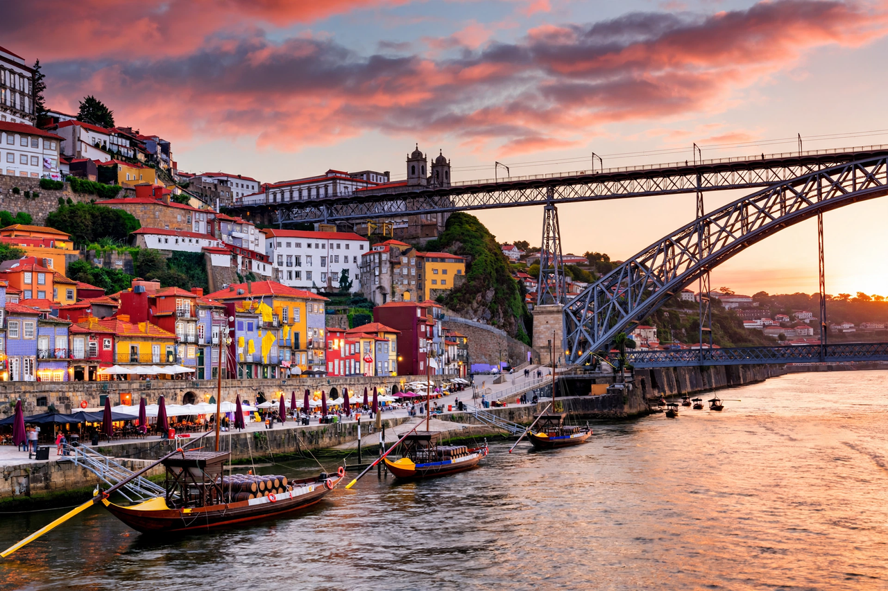

Porto

| Country | Portugal |
|---|---|
| Population | ~230,000 (city); ~1.7 million (metro) |
| River | Douro |
| Known for | Port wine, historic centre (UNESCO) |
Porto (also known as Oporto in English) is the second-largest city in Portugal, after Lisbon, and one of the Iberian Peninsula's major urban areas. It stands on the northern bank of the River Douro near its mouth on the Atlantic Ocean. The city proper has about 230,000 inhabitants, with roughly 1.7 million in the metropolitan area.
History
The Roman settlement of Portus Cale, at the Douro's mouth, gave Portugal its name. Porto played a key role in the Portuguese discoveries; Prince Henry the Navigator was born here in 1394. In 1703 the Methuen Treaty strengthened the wine trade with Britain, and the fortified wine shipped down the Douro from the Alto Douro vineyards took the city's name: port.
Landmarks and wine
The historic centre, with the medieval Ribeira waterfront district, is a UNESCO World Heritage Site. The double-deck Dom Luís I Bridge (1886), designed by a disciple of Gustave Eiffel, links Porto to Vila Nova de Gaia, where the port wine lodges age wine in oak casks and offer tours and tastings. Other landmarks include the Clérigos Tower, São Bento railway station with its azulejo tile panels, the Livraria Lello bookshop, and the modern Casa da Música concert hall. FC Porto, based at the Estádio do Dragão, won the European Cup in 1987 and the Champions League in 2004.